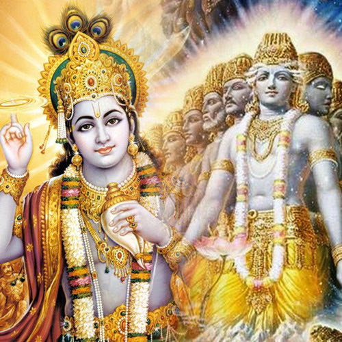
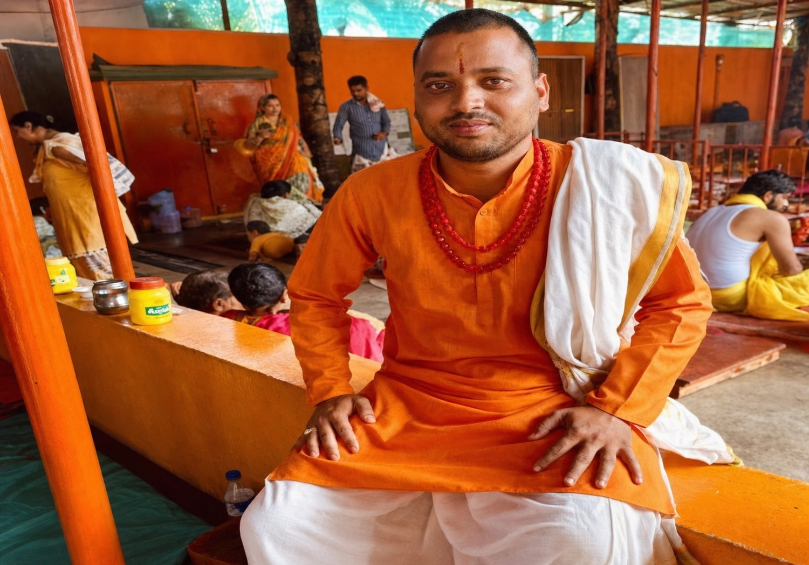

Guruji has more than 6 years of experience in worship.

We are available 24/7, 365 days to our clients.
Free online consultation available over the call.

Astro Consultation also provided as per the Clients Requirement.

पूजा के लिए कॉल करें - 6263635078
पूजा विशेषज्ञ के रूप में, गुरुजी ने इस पूजा में
विशेष निपुणता हासिल की है। उन्होंने अब तक
अनगिनत शांति पूजा और यज्ञ
संपन्न किए हैं, जिनसे यजमानों को तुरंत ही उत्कृष्ट परिणाम प्राप्त हुए हैं।
पता: Kanipura Road Giriraj Ratan Colony A Sector, House No: 539, Ujjain (M.P.)/p>
ईमेल: ramlakhansharma8319@gmail.com
संपर्क नंबर:+916263635078